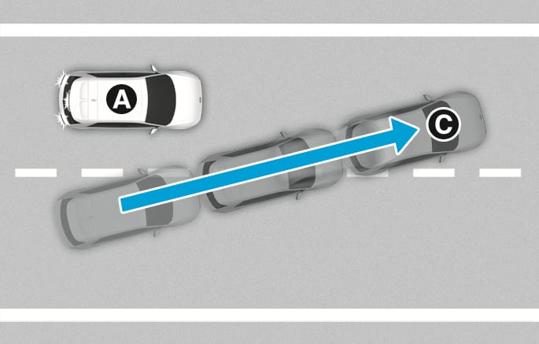
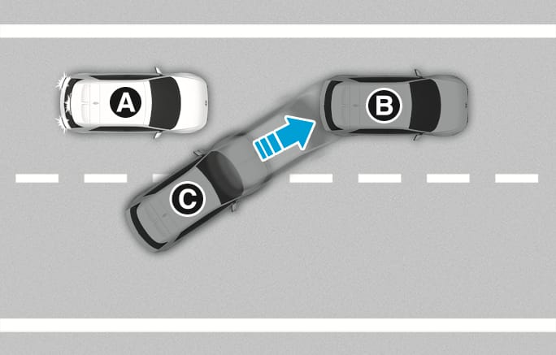
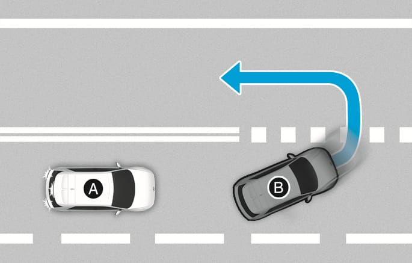
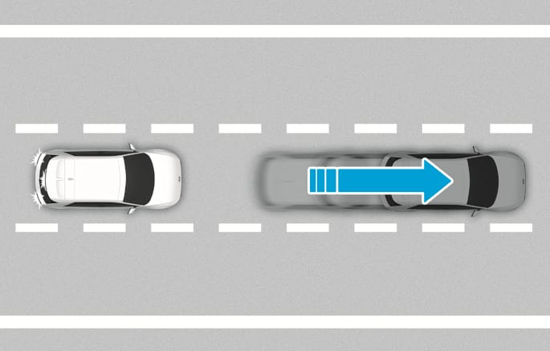
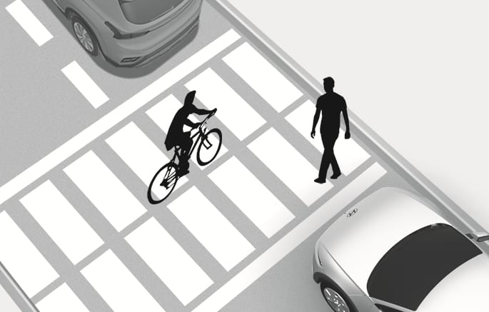
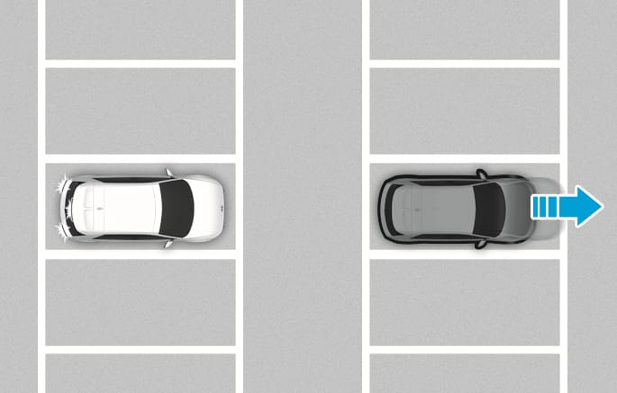
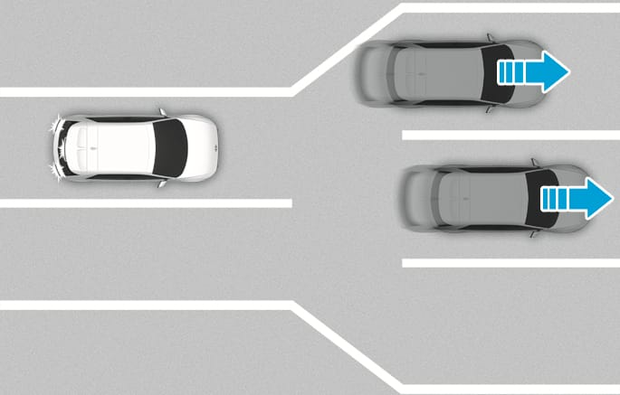

운전자 주의 경고 제한사항
다음과 같은 경우 운전자 주의 경고가 제한적으로 작동하거나 정상적으로 작동하지 않을 수 있습니다.
-
카메라가 오염되거나 파손된 경우, 또는 주위 환경에 의해 카메라의 인식 성능이 저하된 경우
-
차량을 과격하게 운전하는 경우
-
빈번하게 차선을 침범하는 경우
-
차로 이탈방지 보조 등 다른 주행 보조 시스템이 차량을 제어하는 경우
-
차선이 흐리거나 지워진 경우
다음과 같은 경우 전방 차량 출발 알림이 제한적으로 작동하거나 정상적으로 작동하지 않을 수 있습니다.
-
전방 차량(B)과 운전자 차량(A) 사이에 끼어든 차량(C)의 움직임을 감지하는 경우

2C_DAWVCutIn

2C_DAWCutIn_2
- 운전자 차량
- 전방 차량
- 끼어든 차량
-
전방 차량이 급격한 회전이나 유턴을 이용해 전방을 벗어나는 경우

2C_DAWSharplySteer
-
전방 차량이 급가속해 출발하는 경우

2C_DAWAbruptlyDeparture
-
전방 차량과 운전자 차량 사이에 보행자나 자전거 탑승자가 있는 경우

2C_DAWBetweenVehicles
-
주차장에서 앞 열에 주차된 차량의 움직임을 감지하는 경우

2C_DAWInParkingLot
-
차로의 분기 및 합류 지점에 정차했을 때 차선 변동으로 인해 전방 차량을 특정할 수 없는 경우

2C_DAWInTollbooth
시동 또는 전방 카메라 초기화(재부팅 등) 시 약 15초 동안 기능이 작동하지 않을 수 있습니다.